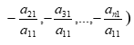
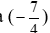
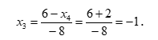

7. Решение системы n-линейных уравнений с n- неизвестными методом Гаусса
Алгоритм решения системы линейных уравнений методом Гаусса:
ШАГ 1. Умножая первое уравнение на подходящие числа (а именно на  и прибавляя полученные уравнения соответственно ко второму, третьему, …, n-му уравнению системы исключим переменную х1 из всех последующих уравнений, начиная со второго. Получим
ШАГ 2. Умножая второе уравнение на подходящие числа и прибавляя полученные уравнение соответственно к третьему, четвертому,…, n-му уравнению, исключим переменную х2 из всех последующих уравнений, начиная с третьего процесс преобразования продолжается до тех пор пока система уравнении не примет следующий вид:

Для упрощения решения системы все вышеуказанные элементарные преобразования удобно проводить над соответствующей расширенной матрицей.
Определение. Расширенной матрицей системы уравнений называется матрица, составленная из коэффициентов при неизвестных и столбца свободных членов.
Привер : Решить систему методом Гаусса.
Решение: Составим расширенную матрицу из коэффициентов и свободных членов системы. Начнем приводить матрицу к ступенчатому виду, используя метод Гаусса
Первую строку умножим на (-2) и сложим со второй, затем первую строку на (-3) и сложим с третьей и умножим на (-2) и сложим с четвертой.
Поменяем местами третью и вторую строку и вторую строку умножим на  и сложим с четвертой строкой Первую строку умножим на (-2) и сложим со второй, затем первую строку на (-3) и сложим с третьей и умножим на (-2) и сложим с четвертой.
Этой матрице соответствует система треугольного вида:
Начинаем обратный ход метода Гаусса. Найдем из четвертого уравнения
Подставляя x 4 = -2;
из третьего: 
Также : x 2 = 2 , x 1 = 1
Ответ: x 1(1: 2: -1: 2)